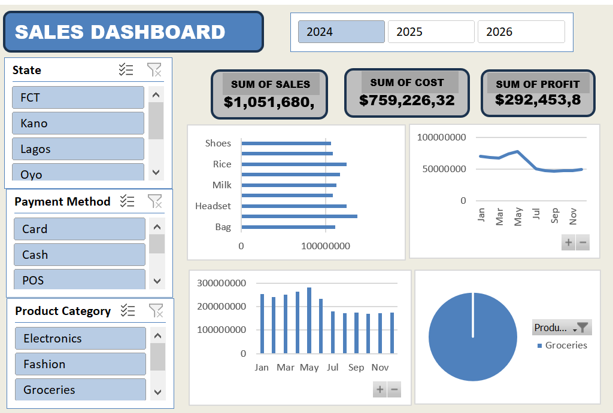
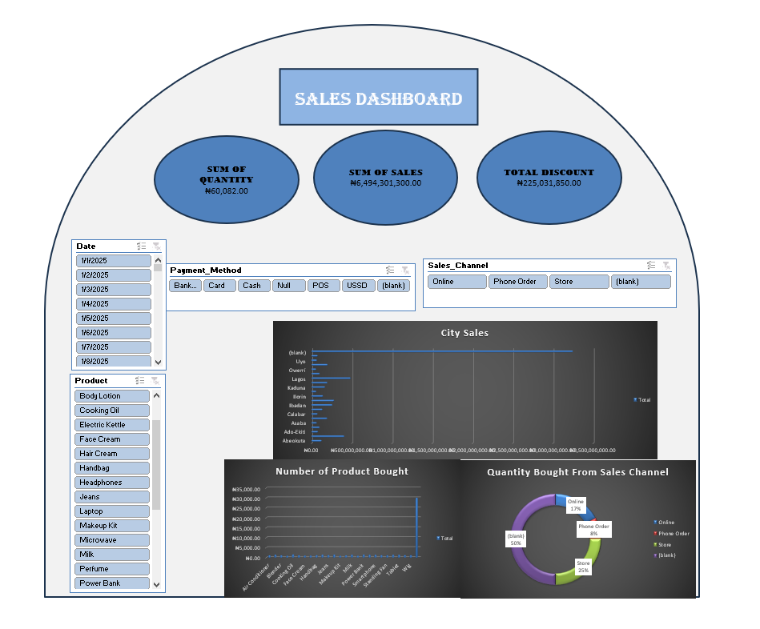
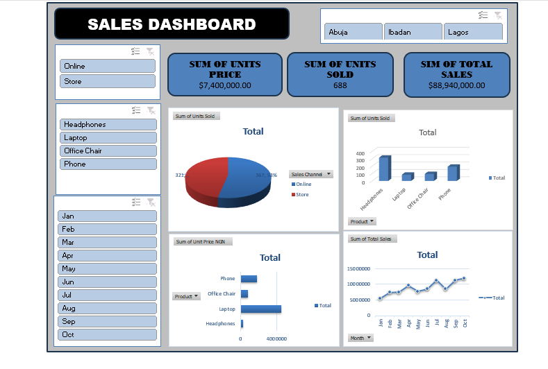

X01 / SPREADSHEETS
Microsoft Excel
Data cleaning, formulas, PivotTables, reporting and dashboard development.
01DATA ANALYSIS / INSIGHT / IMPACT
I’m Maymikun Fadugba, an aspiring Data Analyst focused on transforming raw information into clear insights that support smarter decisions.
Good analysis doesn’t just explain what happened.
It helps reveal what to do next.
A growing analyst. A practical mindset. A commitment to making information useful.
MAYO DATA LAB is the personal analytics brand of Maymikun Fadugba.
I’m developing practical skills in data analysis and visualization, with a focus on asking better questions, working carefully with data, and communicating findings in a useful way.
This portfolio will grow alongside my learning journey. The work shown here will be based on real practice projects and clearly documented analysis.
Building a versatile foundation across spreadsheets, databases, business intelligence and programming.
Data cleaning, formulas, PivotTables, reporting and dashboard development.
01Querying, filtering, joining and exploring structured datasets to find patterns.
02Developing clear visual reports and interactive dashboards for decision support.
03Building a foundation in data handling, analysis and repeatable workflows.
04Practical analytical support, shaped around the question you need answered.
Organising datasets, checking inconsistencies and preparing information for analysis.
Structured spreadsheets, summary reports and dashboard views that make key information easier to understand.
Using queries to filter, combine and examine structured data for useful patterns.
Presenting information through clear charts and visual summaries.
Services reflect current areas of focus and will expand as skills and project experience develop.
Three sales-dashboard showcases featuring business metrics, product, location and channel analysis.

VIEW DASHBOARD ↗Sales overview with year, state, payment-method and product-category filters, sales, cost and profit summaries, product comparisons and monthly trends.

VIEW DASHBOARD ↗Dashboard exploring quantity, sales, discounts, city performance, product mix and sales channels with interactive filters.

VIEW DASHBOARD ↗Reporting view of units sold, unit price and total sales, with product, location, sales-channel and monthly breakdowns.
These are screenshot-based dashboard showcases, not independently validated case studies. Dataset context, methods and verified findings can be added when supporting project files are available.
A thoughtful, repeatable approach keeps the work connected to the original problem.
Clarify the question, context and intended outcome.
Inspect, clean and organise the available data.
Explore the data and look for meaningful patterns.
Present findings clearly, with limitations and context.
Tell me what you're working on. Let's explore how clear analysis can help.